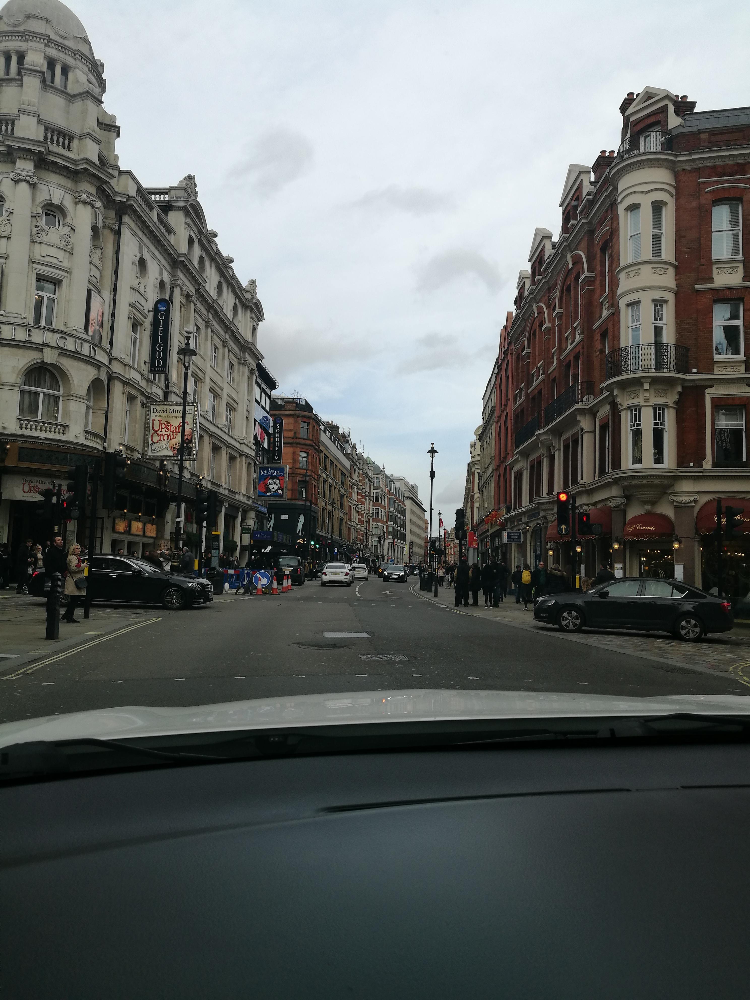
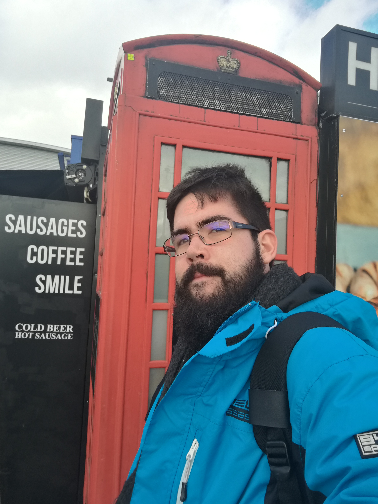
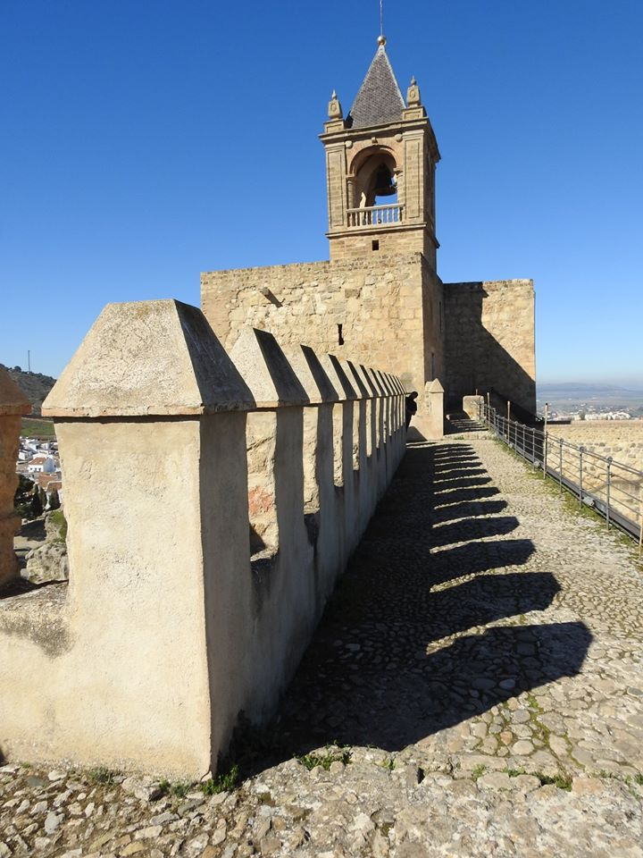
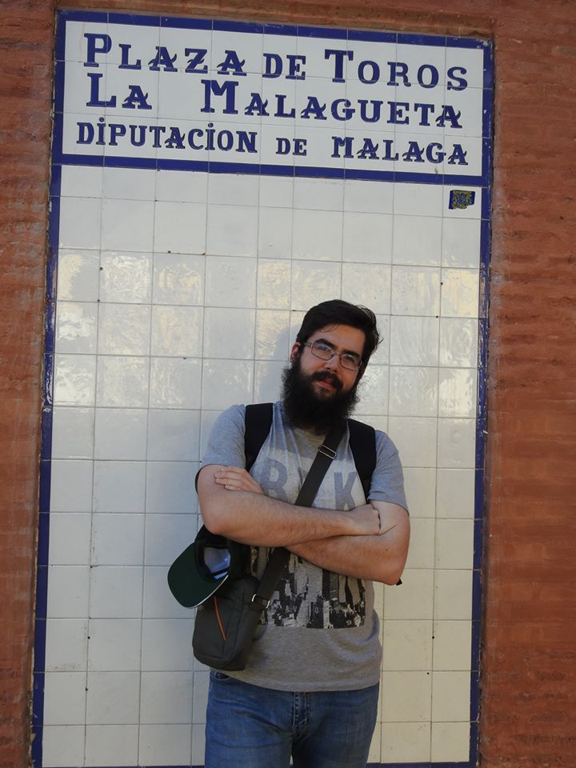
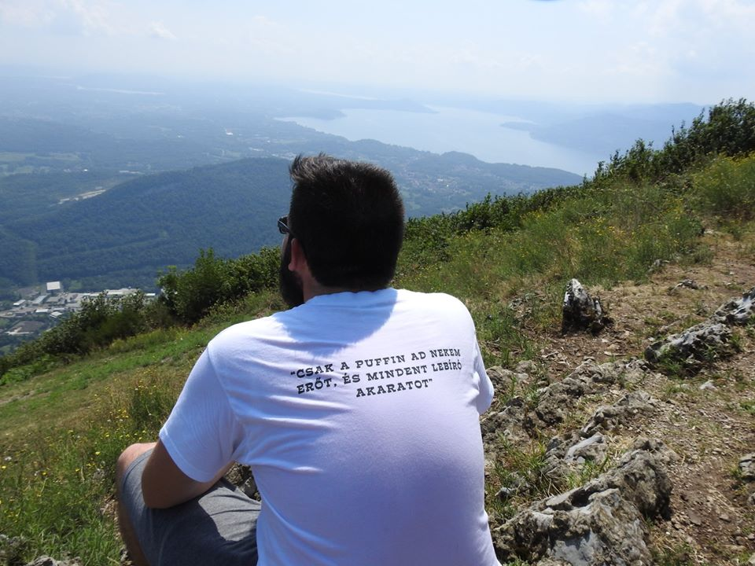
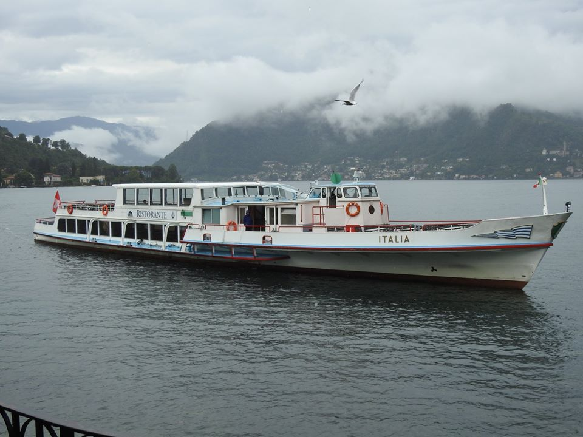
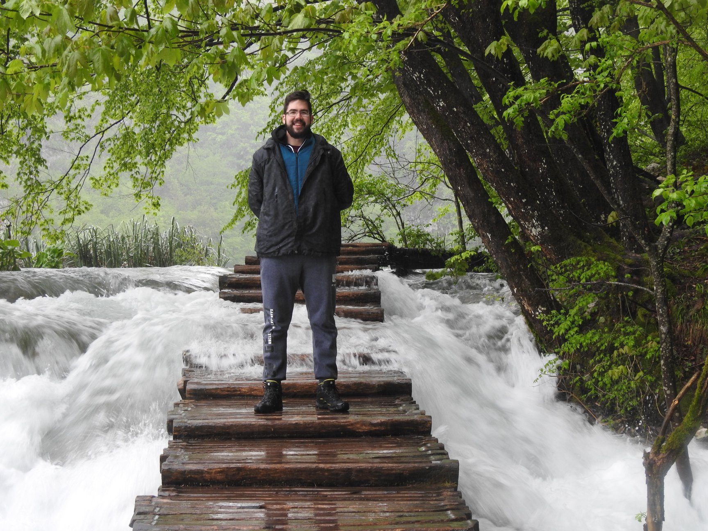
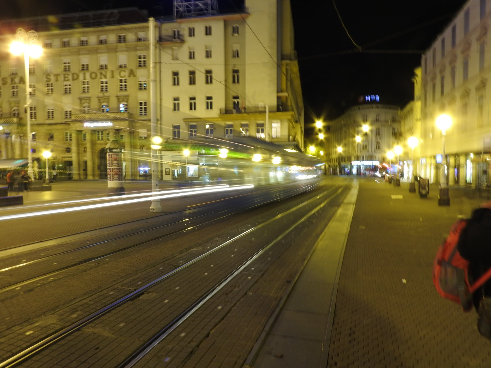
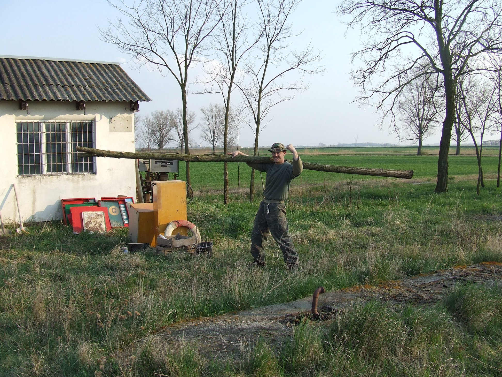

Üdvözöllek a weblapomon!
| Bemutatkozás | A múltam | Utazásaim a világ körül |
Habár a címben a világ körül van, ez teljesen nem igaz. Inkább mondanám Eurázsiát, de Ázsiából is csak Isztambulig jutotam.
De figyelemfelkeltésnek mindig jó kicsit túlozni, nemde?
Az alábbiakban egy kissebb válogatás látható az utakból.
A képek a családom tulajdonát képezik, marketing célra való felhasználásukat megkérdezésem nélkül nem engedélyezem.
Amennyiben engedély lenne szükséges kereshetnek a közösségi média portálokon keresztül (nem szeretnék megadni telefonszámot vagy emailt esetleges egyéb felhasználók miatt).
|


|
Még idén februárban voltam Londonban az egyik brit ismerősömnél. Durván egy hétvégét voltam kint, de az idő nem városnázássel ment el. Ezúttal kivételesen kikapcsolódni és szórakozni voltam külföldön. Ittunk, ettünk, beszélgettünk, kártyáztunk... |
|
Szintén "télen" voltunk Spanyolországban, habár ott ez egyáltalán nem látszott. Egy hétig voltunk ott még a tantárgyfelvétel előtt. Voltunk többek között Malágában, Antequerában, Granadában, Marbellában, Nerjában. Meg még jó pár helyen. Ha februárban fázik az ember, Spanyolországban biztos találhat menedéket a hideg elől. |


|
|
  |
Utoljára tavaly nyáron jártunk Olaszországban. Az utóbbi években az Északi tórendszert látogatjuk. (Na persze ez idén nem fog folytatódni.) Eddig már több, mint 5-ször voltunk Olaszországban. Habár soha életemben nem tanultam olaszt, ragadt rám annyi, hogy tudjak valahova jegyet kérni olaszul a pénztárban 1-2-3 főre. A visszakérdést nem értem azért, de leaglább ennyi olasz tudásom van már... |
|
Kifogtuk a lehető legjobb időt a Plitviczei-tavaknál. Annyira esett "csak", hogy a 3/4 tórendszert le kellett zárni áradások miatt. Szerencsére ez Zágrábra nem volt jellemző. Jó idő volt és még esni sem esett. Habár volt ott néhány érdekesség... |
  |
Végezetül pedig legyen itt a falu Toldija mutatván melyik út megyen itt a határba.

{kind=link}